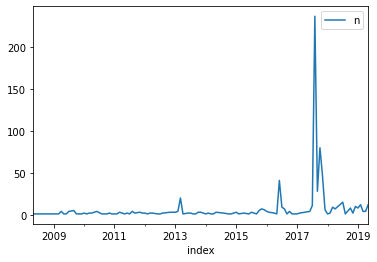
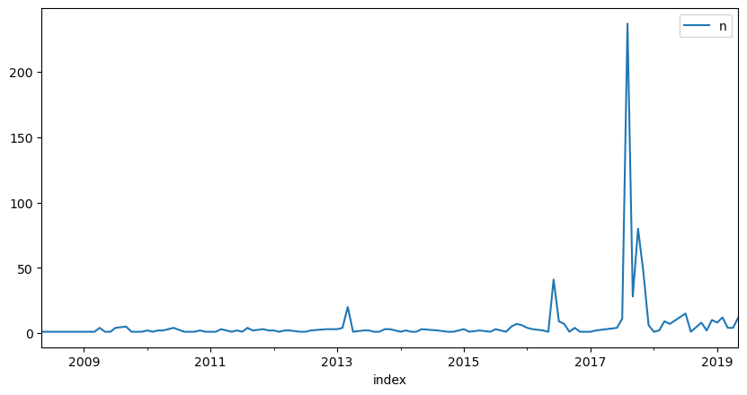
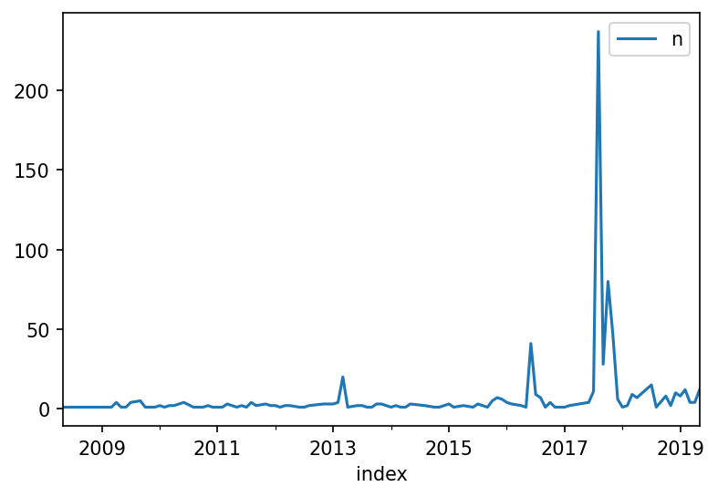
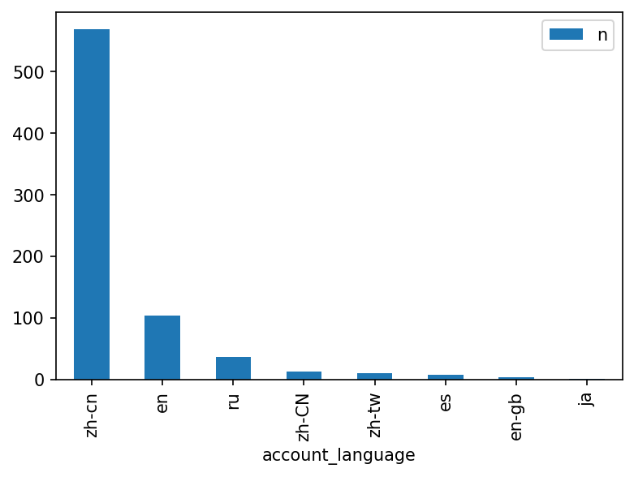
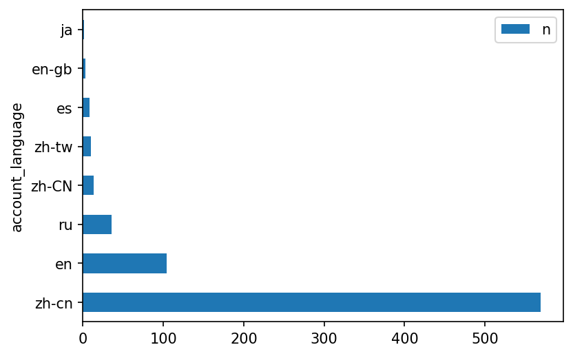
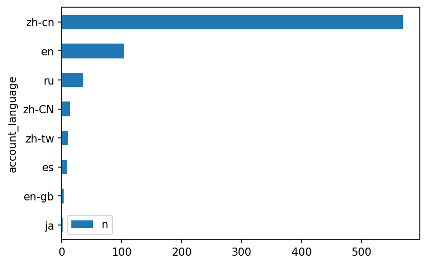

P07 Making Charts
Contents
P07 Making Charts#
Line chart#
import pandas as pd
user_df = pd.read_csv("https://raw.githubusercontent.com/p4css/py4css/main/data/twitter_user1_hashed.csv")
user_df['account_creation_date'] = pd.to_datetime(user_df['account_creation_date'], format="%Y-%m-%d")
user_df['account_creation_ym'] = user_df['account_creation_date'].dt.to_period("M")
sum_df = user_df.groupby('account_creation_ym')['userid'].count().reset_index(name='n')
print(type(sum_df))
sum_df
<class 'pandas.core.frame.DataFrame'>
| account_creation_ym | n | |
|---|---|---|
| 0 | 2008-05 | 1 |
| 1 | 2008-07 | 1 |
| 2 | 2008-11 | 1 |
| 3 | 2009-01 | 1 |
| 4 | 2009-02 | 1 |
| ... | ... | ... |
| 98 | 2019-01 | 8 |
| 99 | 2019-02 | 12 |
| 100 | 2019-03 | 4 |
| 101 | 2019-04 | 4 |
| 102 | 2019-05 | 12 |
103 rows × 2 columns
month_count = user_df['account_creation_ym'].value_counts().reset_index(name='n')
month_count = month_count.sort_values('index', ascending=True)
import pandas as pd
import matplotlib.pyplot as plt
month_count.plot(x = 'index', y = 'n')
<AxesSubplot:xlabel='index'>

plt.rcParams['figure.dpi'] = 100
month_count.plot(x = 'index', y = 'n', figsize=(10, 5))
<AxesSubplot:xlabel='index'>

Plot resolution#
https://stackoverflow.com/questions/39870642/matplotlib-how-to-plot-a-high-resolution-graph
Best result:
plt.savefig('filename.pdf')To png:
plt.savefig('filename.png', dpi=300)
Adjust resolution
For saving the graph:
matplotlib.rcParams['savefig.dpi'] = 300For displaying the graph when you use plt.show():
matplotlib.rcParams["figure.dpi"] = 100
import matplotlib.pyplot as plt
plt.rcParams['figure.dpi'] = 150
month_count.plot(x = 'index', y = 'n')
# plt.savefig("fig.pdf")
<AxesSubplot:xlabel='index'>

Bar chart#
lang_count = user_df['account_language'].value_counts().reset_index(name="n").sort_values('n', ascending=False).rename(columns={"index":"account_language"})
lang_count
| account_language | n | |
|---|---|---|
| 0 | zh-cn | 569 |
| 1 | en | 104 |
| 2 | ru | 36 |
| 3 | zh-CN | 13 |
| 4 | zh-tw | 10 |
| 5 | es | 8 |
| 6 | en-gb | 3 |
| 7 | ja | 1 |
lang_count.plot(kind="bar", x="account_language")
<AxesSubplot:xlabel='account_language'>

Coordinate-flip#
lang_count.plot(kind="barh", x="account_language")
lang_count.plot.barh(x="account_language").invert_yaxis()
plt.show()


Plot with Chinese font#
import pandas as pd
drug_df = pd.read_csv('https://raw.githubusercontent.com/p4css/py4css/main/data/drug_156_2.csv')
pat1 = '代購|帶回'
pat2 = '蝦皮|露天|拍賣|YAHOO|商店街'
filtered_drug_df = drug_df.loc[drug_df['違規產品名稱'].str.contains(pat=pat1, na=False) &
drug_df['刊播媒體'].str.contains(pat=pat2, na=False)]
filtered_drug_df
| 違規產品名稱 | 違規廠商名稱或負責人 | 處分機關 | 處分日期 | 處分法條 | 違規情節 | 刊播日期 | 刊播媒體類別 | 刊播媒體 | 查處情形 | |
|---|---|---|---|---|---|---|---|---|---|---|
| 2 | ✈日本 代購 參天製藥 處方簽點眼液 | 蘇O涵/蘇O涵 | NaN | 01 25 2022 12:00AM | NaN | 無照藥商 | 08 27 2021 12:00AM | 網路 | 蝦皮購物 | NaN |
| 3 | ✈日本 代購 TSUMURA 中將湯 24天包裝 | 蘇O涵/蘇O涵 | NaN | 01 25 2022 12:00AM | NaN | 無照藥商 | 08 27 2021 12:00AM | 網路 | 蝦皮購物 | 輔導結案 |
| 4 | _Salty.shop 日本代購 樂敦小花 | 曾O嫺/曾O嫺 | NaN | 02 17 2022 12:00AM | 藥事法第27條 | 無照藥商 | 12 6 2021 12:00AM | 網路 | 蝦皮購物 | 處分結案 |
| 9 | 現貨正品 Eve 快速出貨 日本代購 白兔60 藍兔 40 eve 金兔 EVE 兔子 娃娃... | 張O恩/張O恩 | NaN | 03 4 2022 12:00AM | NaN | 無照藥商 | 12 21 2021 12:00AM | 網路 | 蝦皮拍賣網站 | 輔導結案 |
| 18 | [海外代購]纈草根膠囊-120毫克-240粒-睡眠 | 江O君/江O君 | NaN | 03 15 2022 12:00AM | NaN | 無照藥商 | 08 2 2021 12:00AM | 網路 | 蝦皮購物 | NaN |
| ... | ... | ... | ... | ... | ... | ... | ... | ... | ... | ... |
| 2947 | 「泰國代購🇹🇭」泰國🇹🇭Hirudoid強效去疤膏（預購） | 魏O芝/魏O芝 | NaN | 06 5 2020 12:00AM | 藥事法第27條 | 無照藥商 | 12 17 2019 12:00AM | 網路 | 蝦皮購物 | 處分結案 |
| 2948 | eBuy美國代購美国正品GNC银杏叶精华提高增强记忆力预防老年痴呆补脑健脑 | 蕭O雄/蕭O雄 | NaN | NaN | NaN | 無照藥商 | 03 9 2020 12:00AM | 網路 | 蝦皮購物 | NaN |
| 2957 | 【現貨】H&H 久光 Hisamitsu酸痛舒緩貼布 120枚 140枚 痠痛 舒緩 貼布 ... | 胡OO/胡OO | NaN | 07 16 2020 12:00AM | 藥事法第27條 | 無照藥商 | 02 27 2020 12:00AM | 網路 | 蝦皮購物 | 處分結案 |
| 2965 | 美國代購 ，9:5%折扣落建髮洗，兩款都有 | 陳O鵬/陳O鵬 | NaN | 07 16 2020 12:00AM | NaN | 藥品未申請查驗登記 | 04 16 2020 12:00AM | 網路 | 樂購蝦皮股份有限公司 | 輔導結案 |
| 2969 | 日本帶回樂敦小花新鮮貨 | 張O萍/張O萍 | NaN | 06 23 2020 12:00AM | NaN | 難以判定產品屬性 | 03 10 2020 12:00AM | 網路 | 蝦皮購物 | 輔導結案 |
420 rows × 10 columns
media_count = filtered_drug_df['刊播媒體'].value_counts().reset_index(name = "n").rename(columns={"index": "media"})
plt.rcParams['figure.dpi'] = 150
plt.rcParams['font.family'] = ['Heiti TC']
media_count.plot.barh(x="media").invert_yaxis()
# plt.show()